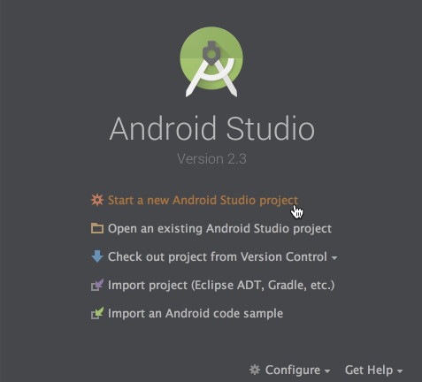
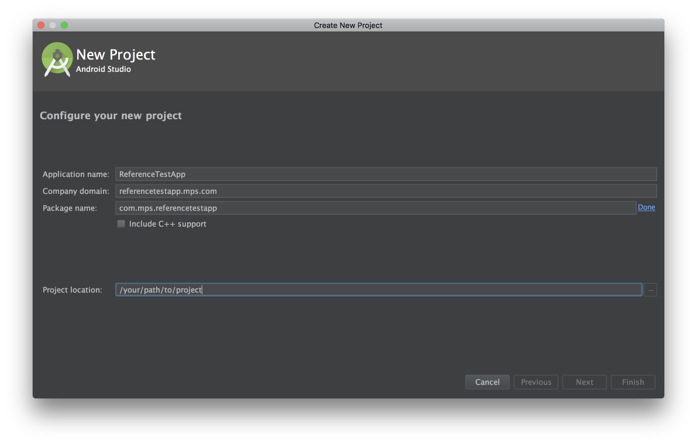
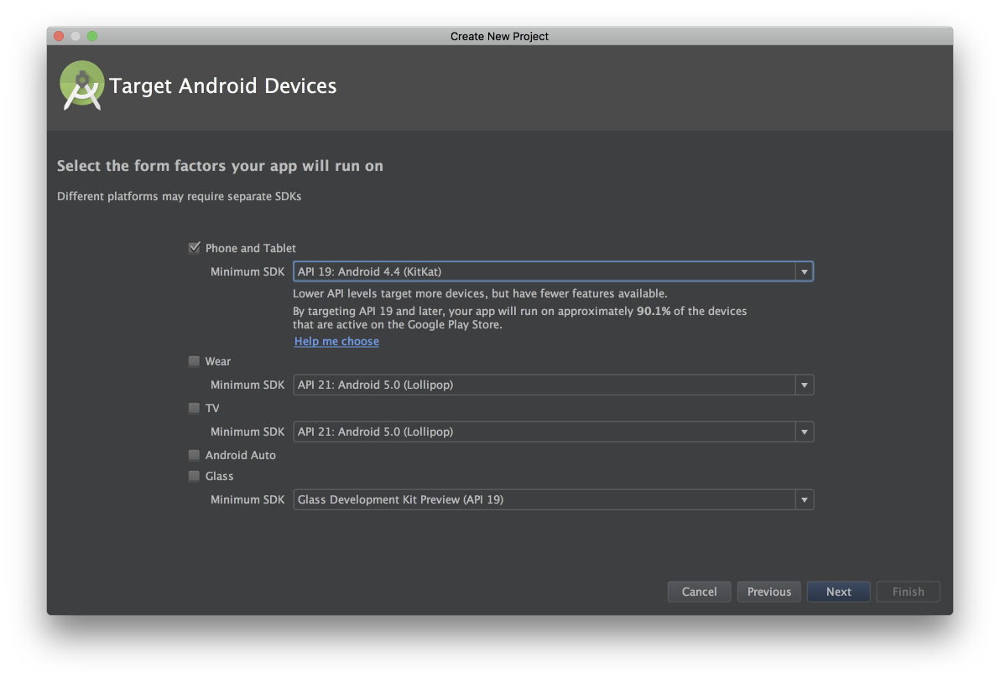
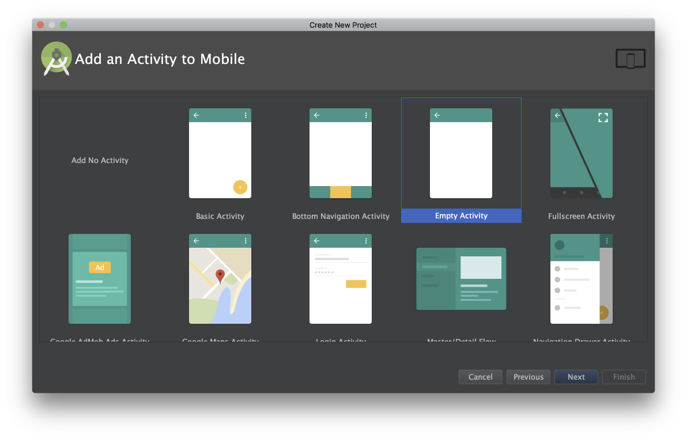
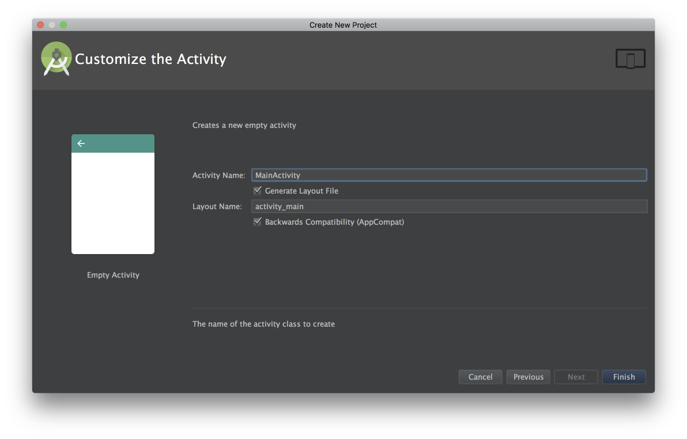

Prerequisites
- Running Android Studio 1.0 or higher
- Developing for Android API level 19 or higher
In order to complete the Get Started guide, you need to have Android Studio installed on your development machine. If you don't already have it, see the Android Studio site for instructions on how to download everything you need to get up and running.
1. Create a new project
In this step, you create a brand new project in Android Studio to use for our example. If you don't already have Studio running, go ahead and open it now.
1.1 Start the new project wizard

If you see the above welcome screen, select Start a new Android Studio project. Otherwise, select File > New Project from the menu.
1.2 Name your project

Give your project the desired Product Name. For the purposes of this example we will call it ReferenceTestApp. Enter your Organization Name and Identifier.
1.3 Set the required SDK version

On the next screen, select Phone and Tablet for the form factor and a minimum SDK version of 19. That's the minimum version supported by the MPS SDK.
1.4 Add your main activity

We're keeping it simple for this example, so on this screen select Empty Activity.
1.5 Name your activity

On this screen you have the option of choosing names for the app's activity and its related resources. Use the default names for this example, and just click the Finish button.
1.6 Add SDK to Your Project
Copy mps-sdk-${VERSION}.aar to your libs folder and add the following code to your project’s build.gradle file:
allprojects {
repositories {
jcenter()
flatDir {
dirs 'libs'
}
}
}
Add the following line to your dependencies section in your app's build.gradle file:
dependencies {
...
compile(name:'mps-sdk-${VERSION}', ext:'aar')
...
}
Then add the following dependency which is used by SDK:
dependencies {
...
compile 'com.google.android.gms:play-services-ads:11.0.4'
...
}
Note: If you see a message about updating the Google Mobile Ads SDK, please contact the MPS SDK Support team prior to updating:
- Email: mps-sdk-support@nbcuni.com
- DPIM Slack channel: #mps_sdk_support